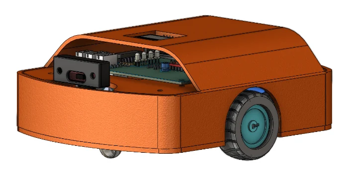
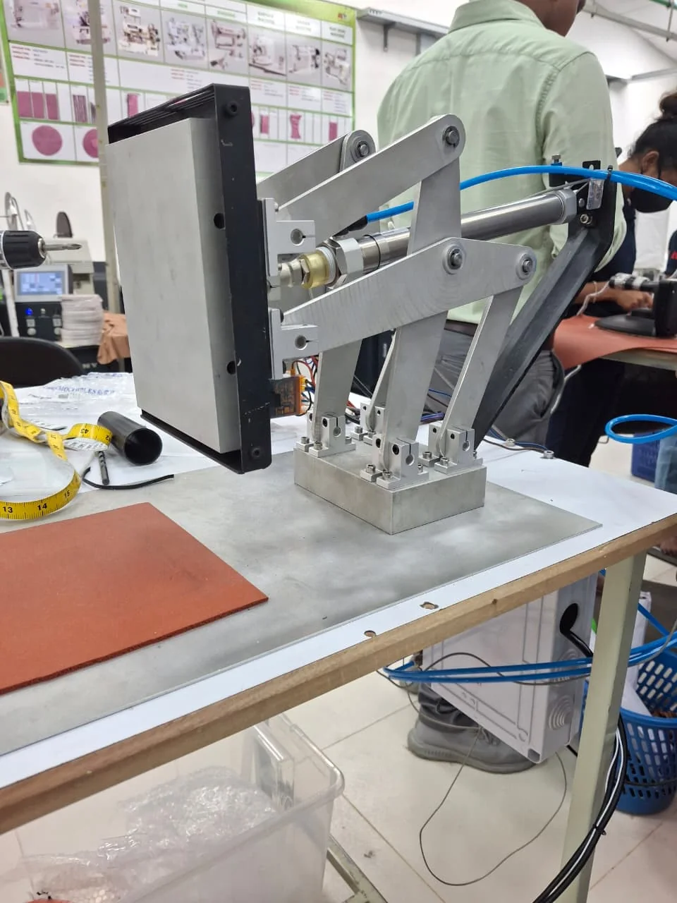

PCB & embedded systems
Schematic capture, PCB layout, sensor interfaces, ESP32, ATmega328P and C/C++ firmware.
I am Zaidh Rizme, a recent engineering graduate who develops practical systems across mechanical design, electronics and embedded software. My work is grounded in building, testing and learning through real applications.

01 / 04 · Final year project
A robot developed from the component level, combining a custom chassis, embedded sensing, Python control, MATLAB mapping and two generations of PCB design.

02 / 04 · Product development
A retrofit oil-monitoring prototype developed around pressure sensing, a custom control PCB, embedded alert logic and a serviceable installation.

03 / 04 · Industrial training
A pneumatic pre-heating station developed through mechanism design, CAD, fabrication, control integration and practical production trials.

04 / 04 · Industrial training
A reverse-engineered glue-pellet hopper developed as configurable SolidWorks parts, then translated into a fabricated and serviceable assembly.
Engineering strengths
I have applied these skills through university and industrial projects, with the practical foundation to keep learning through real engineering work.
Schematic capture, PCB layout, sensor interfaces, ESP32, ATmega328P and C/C++ firmware.
SolidWorks parts, assemblies, drawings, configurations, BOMs and design for fabrication.
Pneumatics, PLC exposure, sensors, wiring, commissioning and practical troubleshooting.
MATLAB mapping, Python interfaces, simulation workflows and structured technical documentation.
Next step
I am looking for a practical role where I can contribute across design, prototyping and system integration while continuing to learn from experienced engineers.